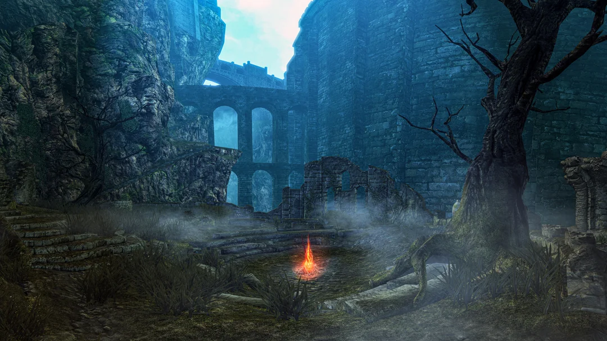

Bem-vindo ao mundo sombrio de Dark Souls
Explore a lore, mapas, chefes e as armas icônicas que fazem de Dark Souls uma experiência inesquecível.
Informções Sobre Dark Souls Remastered
A remasterização apresenta melhores gráficos e taxa de quadros do que a versão original. A remasterização apresenta o design de nível original "inalterado". Existem algumas pequenas mudanças, como a localização do Dedo Seco e uma nova fogueira do Ferreiro Vamos, bem como a opção de trocar Pactos em sua fogueira.
Informações Sobre o Jogo
| Original 2011 | PS4 / Xbox One / Windows | Nintendo Switch | |
|---|---|---|---|
| Resolução | 720p | 1080p (1800p ampliado para 4K no PS4 Pro e Xbox One X, 4K nativo no PC) | Modo TV 1080p Modo Tablet 720p |
| Taxa de quadros | 30fps | 60fps | 30fps |
| Jogadores Online | 1~4 | 1~6 | 1~6 |
| Sistema Online | P2P | Servidor Dedicado | Servidor Dedicado |
| DLC | Vendido separadamente | Incluído | Incluído |